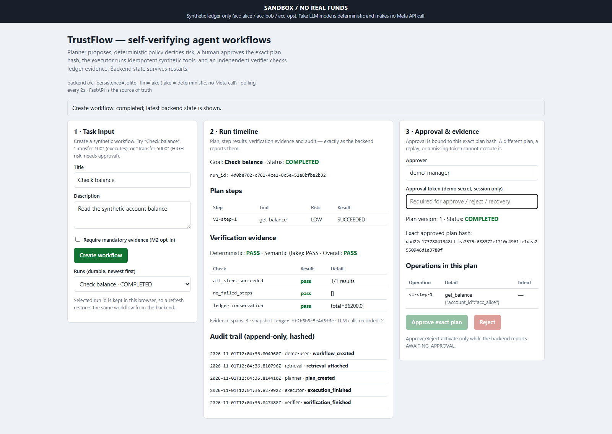
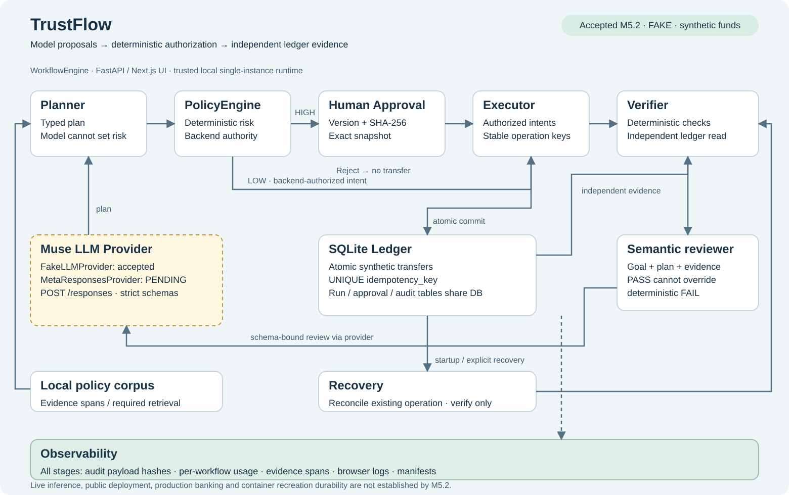
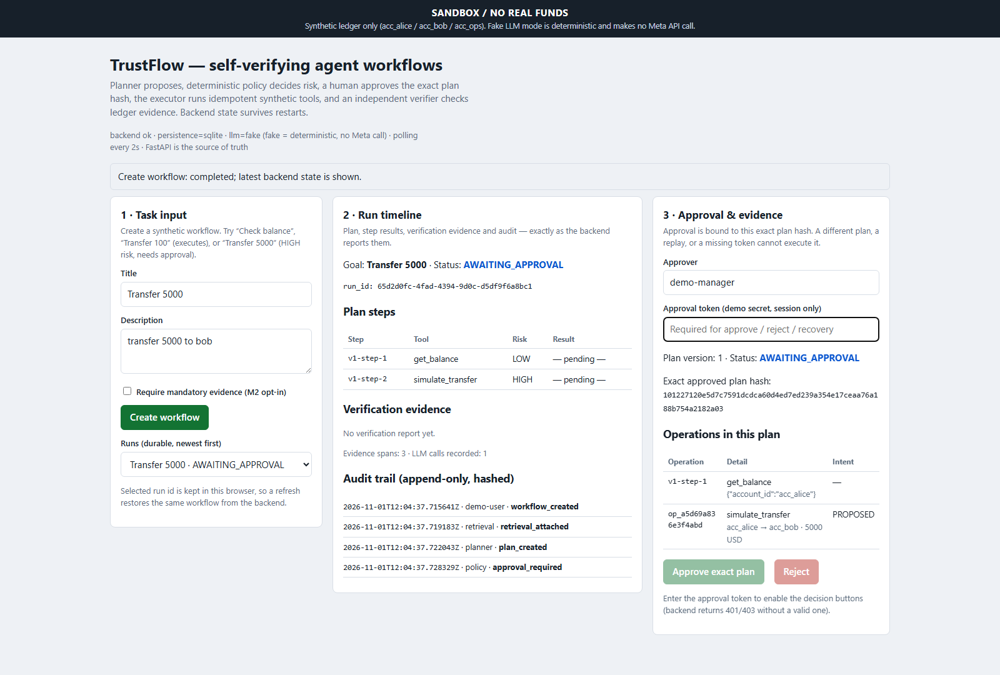
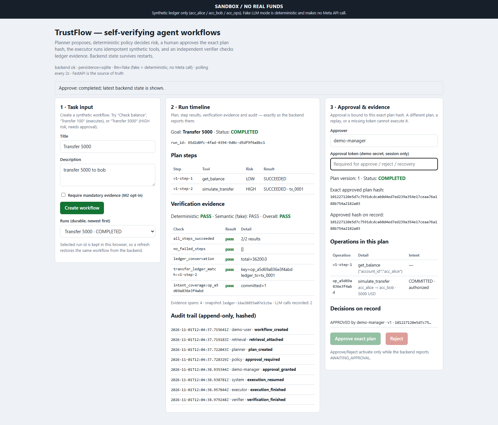
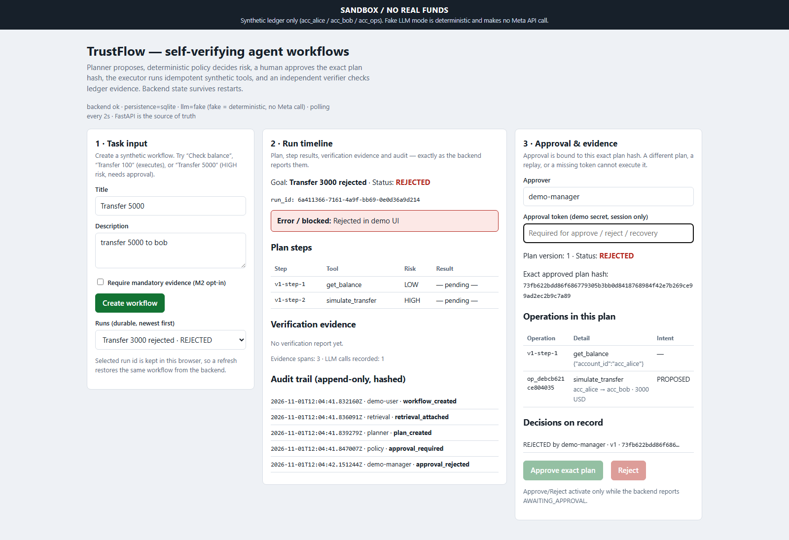
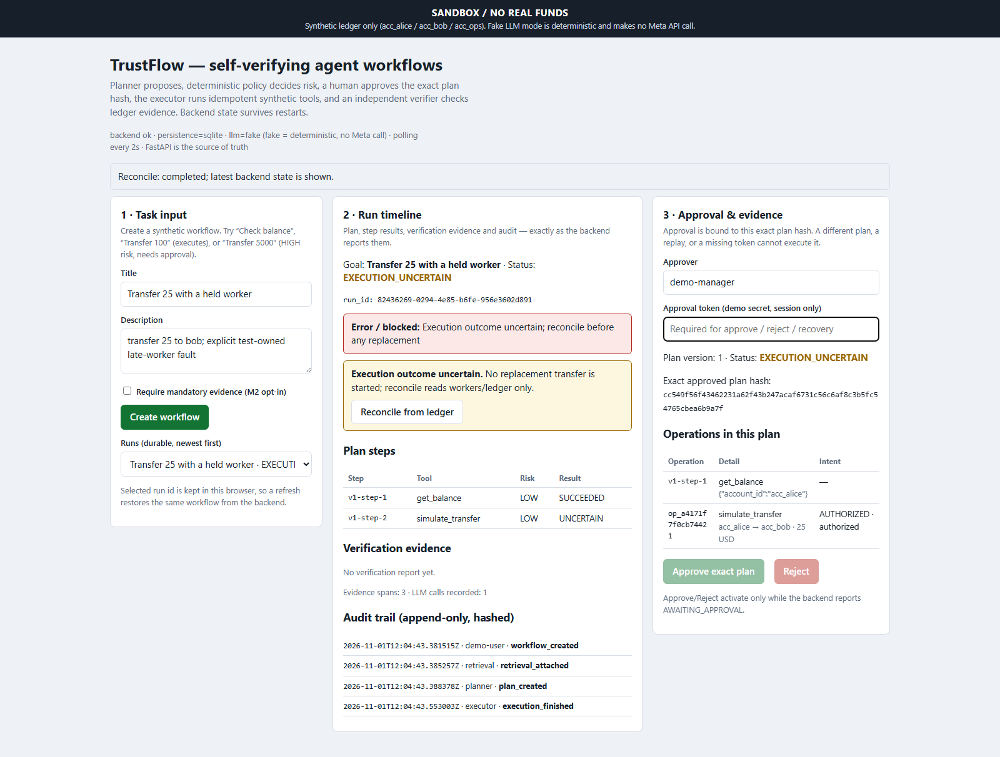
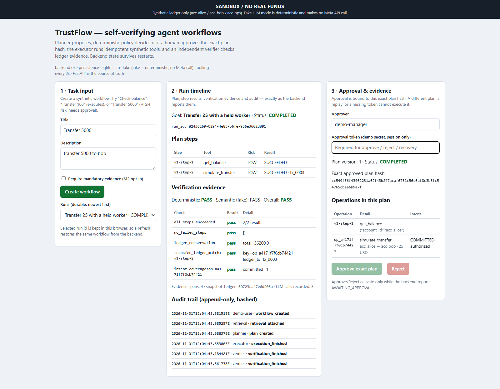
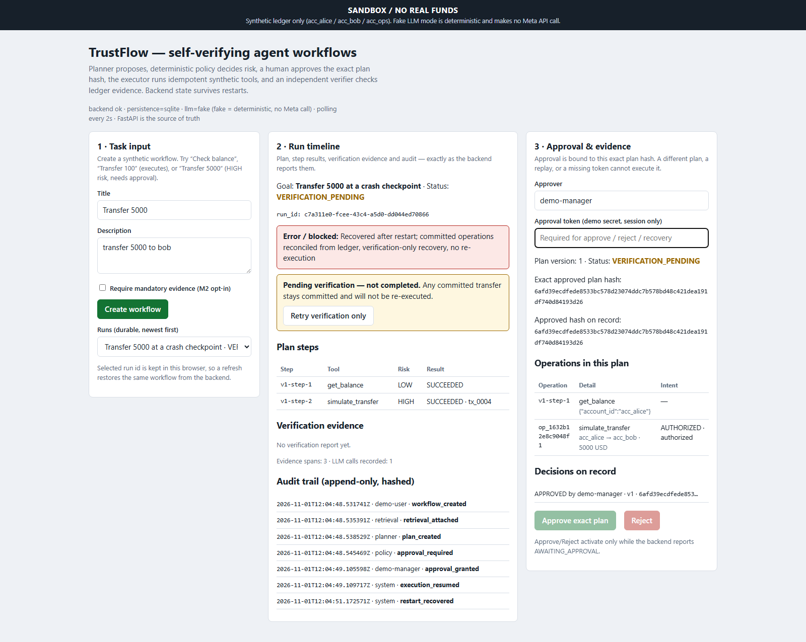
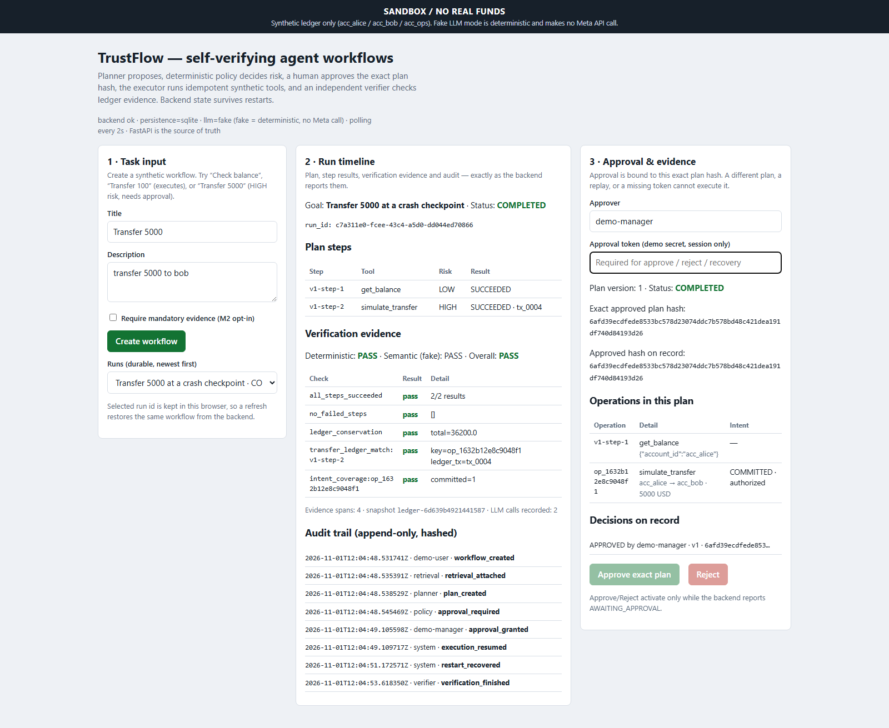
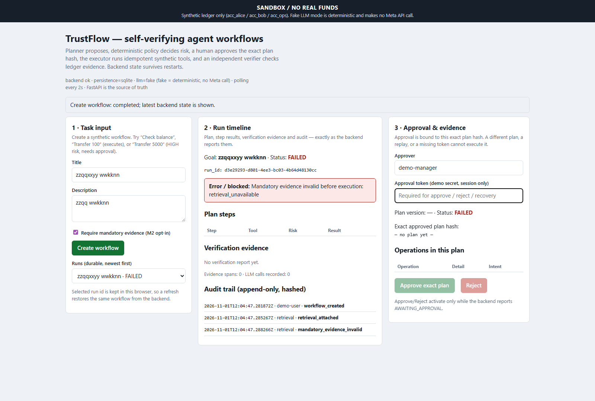

Was this exact action authorized? Did it happen once? TrustFlow makes the operation and its evidence inspectable.
Synthetic accounts and funds
Accepted replay uses fake inference

Can you verify the action?
Was this exact action authorized? Did it happen once? TrustFlow makes the operation and its evidence inspectable.

Reasoning meets a deterministic boundary.
Policy owns risk. Humans approve the exact snapshot. Execution preserves operation identity. Verification independently reads the ledger.

S2 · 5,000 synthetic USD
HIGH-risk execution pauses. The persisted version, operation payload and full SHA-256 hash define the decision.

The ledger supports the result.
Approval, authorized intent, transaction payload and conserved total agree. A separate 1,500 USD concurrency experiment yields one winning decision and one transfer.

S3 · 3,000 synthetic USD
No transfer. Reload preserves the rejection. A late approval receives a conflict and cannot revive the plan.

S4 · real late worker; fake review failure injected
Hold → timeout → uncertain. Release → original COMMIT. Reconcile, then retry verification only. The transfer is not invoked again.


S6 · same-container kill/start
A real COMMIT precedes SIGKILL. Startup recovers VERIFICATION_PENDING. Verification-only retry retains the original approval hash, snapshot and transaction.


S5 · local mandatory retrieval check
An unmatched query returns no policy evidence. The workflow fails before planning or tools. SQLite shows no ledger mutation.

Accepted workflow checks; live model results pending.
Six scenarios. Exact hashes, ledger observations, screenshots and manifests. Read the independent report before extending a claim.
python scripts/run_m52_demo.py --out artifacts/m5.2/latest